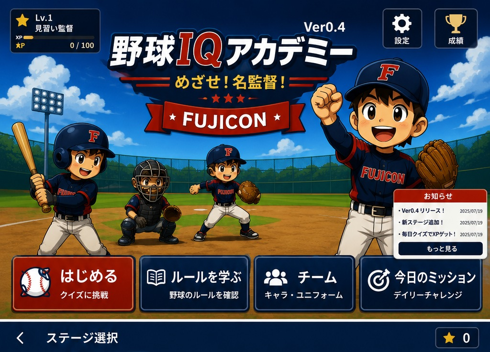
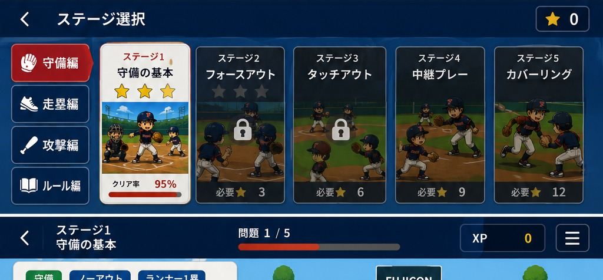
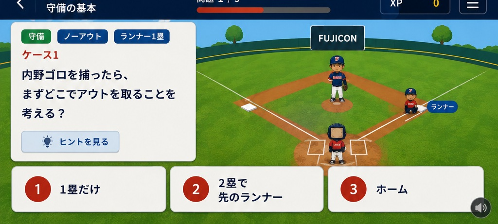

守備では、まずアウトを1つ取ろう
ボールを捕ったら、すぐ投げるのではなく「どこなら一番確実にアウトを取れるか」を考えます。
低学年の合言葉
① アウトの数を見る
② ランナーの場所を見る
③ 近くて確実なアウトを探す
④ 分からないときは仲間の声を聞く

めざせ！名監督！
FUJICON
ボールを捕ったら、すぐ投げるのではなく「どこなら一番確実にアウトを取れるか」を考えます。

正解数 0 / 5